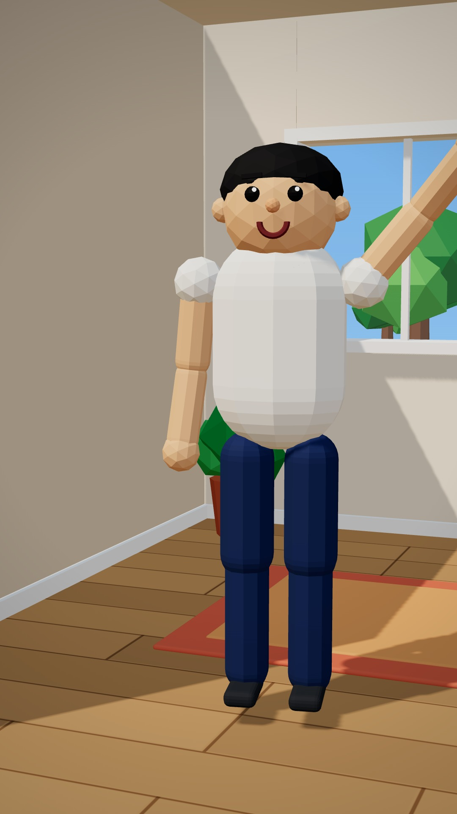
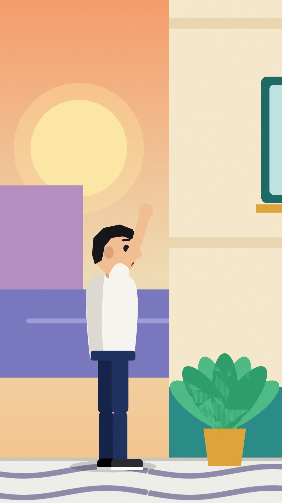
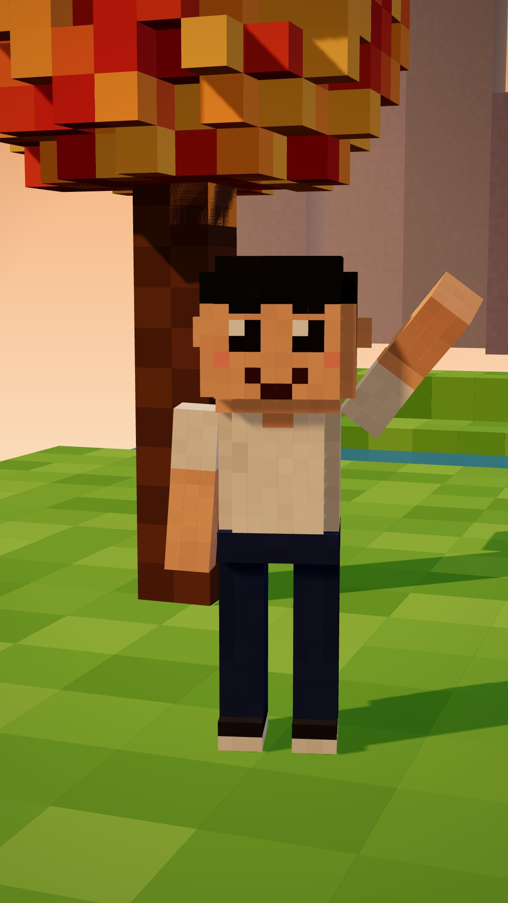
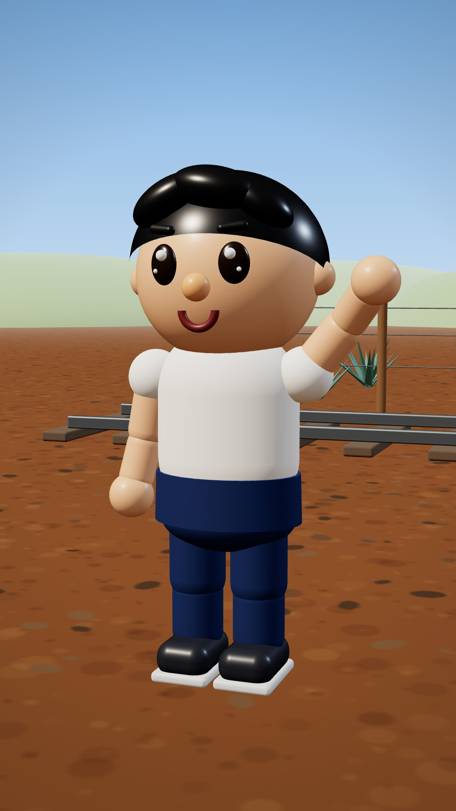
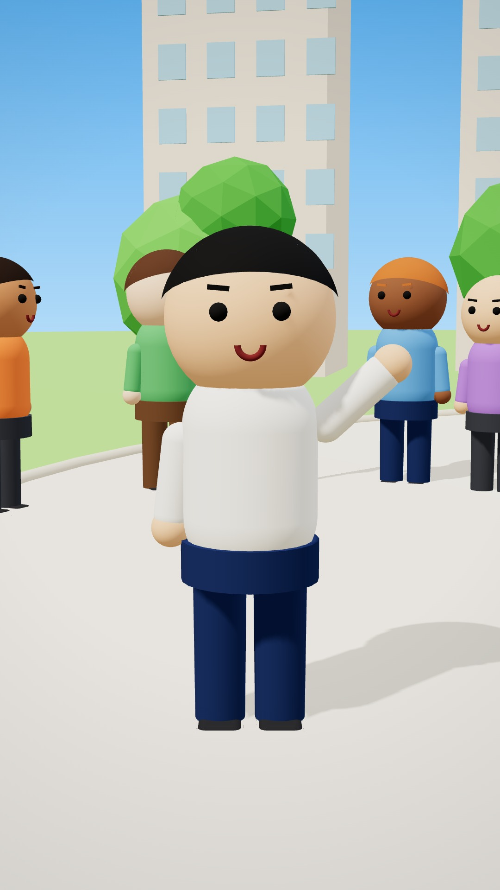
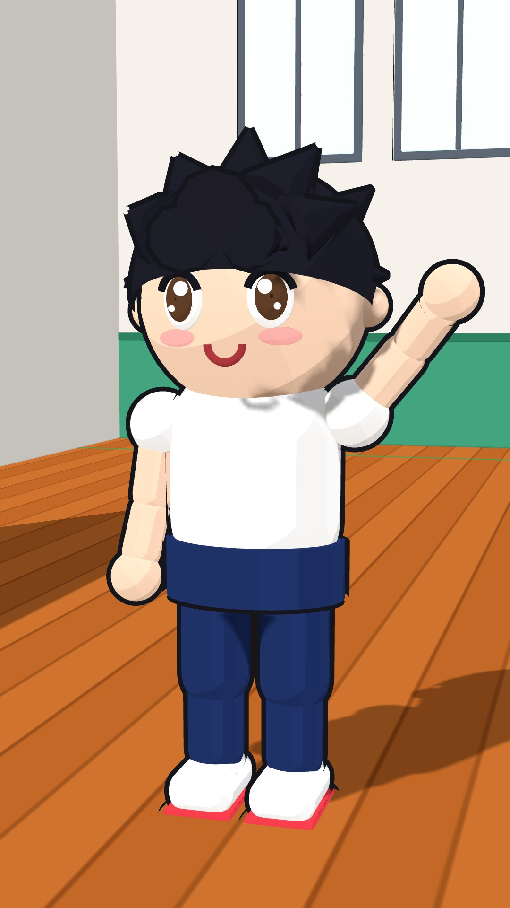
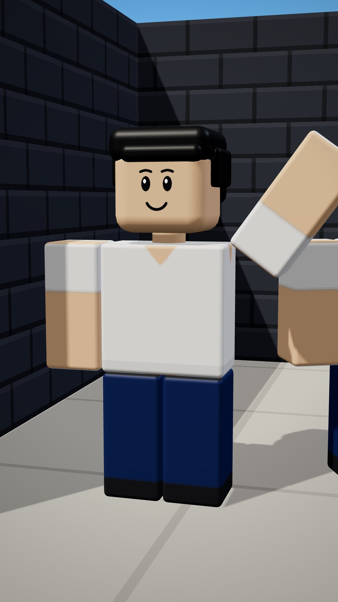

Estilos visuais
Cada estilo é um jeito diferente de vídeo: o boneco, o cenário e a edição mudam juntos. Escolha um e diga o número (ou o nome) pro Claude — ele faz o vídeo inteiro nesse estilo. O boneco modelo é sempre de camisa branca, calça azul-escura e cabelo preto; dá pra pedir outro visual.
Compare os estilos
Clique no ▶ pra ver 10 segundos de cada estilo (com som). O peso junta tudo o que um vídeo custa pra fazer: créditos do Claude, tempo dele montando a cena, tempo de render e quantas rodadas de correção costumam aparecer. Quanto menor, mais leve.
| # | Estilo | Vídeo | Peso (0–100) | Créditos do Claude | Claude montando | Render de 2 min | Correções previstas |
|---|---|---|---|---|---|---|---|
| 1 | Padrão em uso | 60 médio | médio | 35–50 min | 6–8 min | 2–3 | |
| 2 | Ilustrado 2D | 70 pesado | médio-alto | 45–60 min | 4 min | 2–3 | |
| 3 | Cubinhos | 75 pesado | alto | 45–60 min | 5 min | 2–3 | |
| 4 | Brinquedo | 55 médio | médio | 35–45 min | 6 min | 2 | |
| 5 | Simples | 35 leve | baixo | 20–30 min | 4–5 min | 1–2 | |
| 6 | Desenho | 60 médio | médio | 35–45 min | 6–7 min | 2 | |
| 7 | Avatar de jogo | 45 médio | baixo | 25–35 min | 7–8 min | 1–2 |
Estimativa pra um vídeo de 1min30 a 2min30 com 5 a 7 peças, num computador com placa de vídeo. Num notebook sem placa de vídeo, o render leva 2 a 3 vezes mais. O primeiro vídeo pesa uns 30 a 50% a mais em qualquer estilo. A narração (ElevenLabs) custa o mesmo em todos.
1Padrão em uso
O visual da série Desmontando o Mundo: 3D low-poly colorido, casa em corte, quintal com grama e cerca, céu com nuvens. Letreiros amarelos grossos com contorno preto, plaquinhas brancas em pílula, legenda branca com as palavras-chave em amarelo.
Como é a edição: O formato da série: câmera que gira devagar em volta das coisas, alterna perto e longe, letreiro amarelo com pop, volta da fita com ◀◀, emoções no boneco; transição de cortina.
nome pra pedir pro Claude: padrao

2Ilustrado 2D
Desenho plano visto de lado, como animação de explicação: cores chapadas (petróleo, mostarda, creme, lilás), pôr do sol, prédios em corte, calçada de ondinhas. Sem luz nem sombra 3D. A câmera anda de lado, aproxima e afasta, como se o desenho fosse um cenário de papel. Letreiros em pílula branca com linha até a peça, legenda arredondada numa caixinha.
Como é a edição: Câmera de lado que desliza (nunca gira); transições de cortina colorida; peças entram deslizando ou crescendo; ênfase com zoom suave; emoções em ícones planos.
nome pra pedir pro Claude: ilustrado

3Cubinhos
Mundo de jogo de blocos: o boneco, as árvores, o chão e os objetos são montados com cubinhos. Fim de tarde quente, árvores de outono, rio e cidade de blocos ao longe, folhinhas caindo. Letreiros em caixinha escura de jogo, legenda em letra de pixel com sombra dura, aviso de "peça nova" quando uma peça é nomeada.
Como é a edição: Câmera que passeia devagar, tipo cena de jogo; cada peça nova ganha um aviso de PEÇA NOVA no topo e pisca; transição de pixels; efeitos sonoros de jogo (blips, moedinha, pulo).
nome pra pedir pro Claude: cubinhos

4Brinquedo
Bonequinhos 3D lisinhos e brilhantes, cabeçudos e de olhos grandes, como brinquedos de plástico, num cenário mais realista: terra com pedrinhas, plantas, cerca de arame, trilho, morros ao longe. Luz de sol macia, cara de miniatura. Legenda branca grossa com contorno, letreiros brancos limpos.
Como é a edição: Câmera de cinema: aproximações lentas, giros suaves em volta do boneco, câmera lenta nos erros (tempoLento), tremor leve nos impactos; letreiro limpo e plaquinha escura.
nome pra pedir pro Claude: brinquedo

5Simples
3D bem básico e colorido, estilo vídeo "E SE…?": bonequinhos de cápsula com cabeça redonda grande e olhinhos de bolinha, praça clara, árvores de bolinha, céu azul limpo. Bom pra multidão reagindo junto. Manchete amarela grande no topo, legenda branca grossa com contorno preto.
Como é a edição: Abre com uma manchete no topo (ex.: E SE…?); a multidão reage junto (emotes em várias pessoas); socos de zoom nas revelações; transição de círculo; ritmo rápido.
nome pra pedir pro Claude: simples

6Desenho
3D com cara de desenho animado japonês: sombra em tons chapados, contorno preto em tudo, olhos grandes com brilho, cabelo espetado, cores fortes e lugares internos bem iluminados (ginásio, sala de aula, quarto). Linhas de velocidade e palavras de impacto nas horas fortes.
Como é a edição: Momentos fortes com linhas de velocidade e soco de zoom; palavras de impacto (PÁ!, VUSH!); emoções de desenho (gota de suor, veia de raiva, estrelinhas); transição de risco diagonal.
nome pra pedir pro Claude: desenho

7Avatar de jogo
Bonequinho de blocos de plástico, como avatar de jogo online: cabeça quadradinha com rosto desenhado, braços e pernas retos, mundo de blocos lisos e paredes de tijolo de textura simples. Edição de meme: legenda grande no meio da tela, soco de zoom, tremor e círculo vermelho apontando a peça.
Como é a edição: Edição de meme: legenda grande e centralizada, soco de zoom nas piadas e revelações, tremor nos impactos, círculo vermelho com seta na peça nomeada, rosto do avatar trocando de expressão; transição de flash.
nome pra pedir pro Claude: avatar

+Criar o meu estilo
Peça pro Claude: “quero criar um estilo meu” — mande uma imagem de referência (print de um vídeo que você gosta, sua marca, suas cores) ou descreva. Ele parte do estilo mais parecido, ajusta boneco, cenário, letreiros e edição, mostra as duas imagens e você ajusta até gostar. O estilo novo aparece aqui.